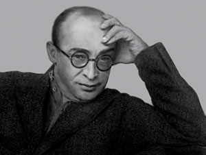

один из знаковых памятников архитектуры советского авангарда и конструктивизма. Построен в 1928—1930 годах по проекту архитекторов Моисея Гинзбурга, Игнатия Милиниса и инженера Сергея Прохорова[2] для работников Народного комиссариата финансов СССР (Наркомфина). Автор замысла дома Наркомфина М. Я. Гинзбург определял его как «опытный дом переходного типа»[3]. Дом находится в Москве по адресу: Новинский бульвар, дом 25, корпус 1.
С 1980-х годов дом находился в аварийном состоянии, был трижды включён в список «100 главных зданий мира, которым грозит уничтожение»[4]. В 1986 начато исследование и работа над проектом реставрации дома по инициативе Владимира Гинзбурга; в 1998 году проект отмечен первой премией фестиваля «Зодчество». В 2016—2020 годах дом отреставрирован по проекту АБ «Гинзбург Архитектс». Результаты исследования и реставрации опубликованы[5][6]. Сейчас Дом Наркомфина — и памятник архитектуры, и жилой дом.

В 2021 году Музей современного искусства «Гараж» инициировал масштабное исследование Дома Наркомфина, в том числе истории жизни его создателей и обитателей на протяжении почти ста лет. Полученное знание становится основой экскурсионных маршрутов, публикаций, разнообразных публичных и просветительских проектов, выстроенных вокруг легендарного дома. Помимо этого, для жильцов дома, патронов Музея и владельцев карт GARAGE доступно кафе Дома Наркомфина, а на первом этаже жилого корпуса открылся книжный магазин.[7]
Дом Наркомфина, или 2-й дом Совнаркома (СНК) РСФСР, стал одним из экспериментальных домов, построенных по результатам теоретических исследований Секции типизации Стройкома РСФСР, созданной по инициативе М. Я. Гинзбурга и работавшей под его руководством в 1928—1929 годы (в работе также участвовали входившие в объединение ОСА М. О. Барщ, В. Н. Владимиров, А. Л. Пастернак, Г. Р. Сум-Шик). Как сказано в монографии Йоганнеса Крамера[нем.] «Das Narkomfin Kommunehaus In Moskau 1928—2012», «аналогичные устремления существовали в то же время и в Германии, где этими вопросами занимался Исследовательский институт экономической эффективности в строительстве и жилищном хозяйстве (RfG[нем.]), хотя полученные им результаты были менее радикальными и менее призрачными»[8].
Учреждению секции предшествовала работа в 1928 году комиссии Стройкома по отбору типовых проектов жилья для строительства. Комиссия пришла к выводу, что большинство известных на тот момент проектов не может быть использовано как типовые, поэтому для разработки типовых проектов была создана Секция типизации[9]. Подготовкой для работы над новым форматом жилья также стала работа над домом Госстраха на Малой Бронной (1926—1927, М. Я. Гинзбург и В. Н. Владимиров) и конкурс на «эскизный проект жилого дома трудящихся», проведённый журналом «Современная архитектура» (Гинзбург подал на конкурс проект «Коммунального дома А-1»). Выставка проектов конкурса состоялась в июне 1927 года[10].
Результаты исследования секции М. Я. Гинзбург доложил на пленуме Стройкома РСФСР, где было принято постановление, рекомендовавшее несколько разработанных жилых ячеек к массовому строительству, а остальные — к опытно-показательному, начиная с 1928 года. Согласно этому постановлению было построено шесть «экспериментальных коммунальных домов переходного типа» в Москве, Свердловске и Саратове. Все они служили для проверки результатов теоретических исследований Секции типизации и были созданы в рамках финансировавшейся государством программы экспериментального строительства 1929 года. Проект дома Наркомфина создан в 1928—1929 годы, строительство велось в 1929—1930 годы./p>

С. О. Хан-Магомедов называет дом Наркомата финансов самым интересным из шести экспериментальных домов[2].
Заказчиком жилого комплекса выступал нарком финансов РСФСР (1924—1929) Н. А. Милютин, известный как автор схем социалистического расселения и градостроительных концепций соцгорода[11], он же определил функциональные характеристики будущего здания[12]. Сотрудничество наркома Н. А. Милютина и архитектора М. Я. Гинзбурга началось несколько раньше, на строительстве дома Госстраха (1926—1927), — Милютин был инициатором строительства двух домов Госстраха в Москве. Идеи Н. А. Милютина об устройстве жилища воплотились при создании дома Наркомфина (Дома-парохода, или 2-го дома СНК).
По теории Милютина[13], «значительное повышение жизненного уровня рабочих и развитие обобществлённых форм обслуживания бытовых нужд трудящихся (общественное питание, ясли, детские сады, клубы и т. п.) постепенно уничтожают значение семьи как хозяйственного соединения. Этот процесс неизбежно приведёт, в конечном счёте, к полной переделке семейных форм общежития. <…> Задача раскрепощения женщины от мелкого домашнего хозяйства и вовлечение её в производство заставляет нас ставить вопрос о всемерном содействии этому процессу»[14].
Задача реализации этих принципов и была поставлена перед авторами проекта. Согласно Е. Милютиной, это был дом «нового быта»[15].
Сметная стоимость строительства составила 10 млн рублей[16]. Строительство жилого корпуса осуществлялось под наблюдением комиссии, возглавлявшейся Н. А. Милютиным. Коммунальный корпус и корпус прачечной строились без утверждённых чертежей[17].

Идеи, связанные с планировочной и объёмной структурой, так же как и с функциональным наполнением дома, изложены в публикациях журнала «Современная архитектура», докладе М. Я. Гинзбурга на пленуме Стройкома[2], а также в его книге «Жилище»[18].
Секция типизации Стройкома РСФСР ставила перед собой задачи разработки экономичного решения проблемы жилья без потери его качества и даже с повышением комфорта, в частности, благодаря естественному освещению не только жилых, но и подсобных зон, в т. ч. коридоров[19].

Гинзбург критически оценивал так называемое моссоветовское строительство («массовое жилищное строительство Москвы первых лет после революции»), считал «экономический эффект» доходного дома более высоким. Поэтому работа Секции началась с анализа типологии «дореволюционного «доходного дома» и её оптимизации.
По словам Виктора Бухли, дом Наркомфина был домом переходного типа от «буржуазного дома» к «социалистической коммуне», и, хотя содержал в себе ранее существовавшие «буржуазные» квартиры (ячейки K и 2F), был структурирован таким образом, чтобы облегчить переход индивида к полностью социализированной жизни (в ячейках F)[20].
Авторы сохраняли объём и высоту жилых помещений, урезая как площадь, так и высоту подсобных. Были удалены вторые лестницы и комнаты домработниц, уменьшены передние, ванные, спальни и кухни, причём последние — как по площади, так и в высоту. «Уплотнение» подсобных зон компенсировалось большей высотой хорошо освещённых гостиных. Рассчитывались пропорции квартир, оптимальные траектории движения человека внутри и схемы эффективной расстановки мебели. Приведённые в книге расчёты эффективности использования жилого пространства построены на рассмотрении отношения кубатуры к жилой площади квартир и параметра k (k=W/P, соотношение общей кубатуры здания к полезной площади жилых ячеек).
Под строительство дома для работников Наркомата финансов в апреле 1929 года была отведена территория огородов, ранее принадлежавших двум усадьбам, жилые дома которых были выстроены в XIX веке по красной линии Новинского бульвара; в одном из этих домов в 1910—1922 годы жил Ф. И. Шаляпин и сейчас располагается его дом-музей. Территория полого спускается к Пресненскому пруду, который к 1925 году был осушен и засыпан, а питавшая его река Пресня забрана на этом отрезке в трубу[11].
В проектной документации дом именовался 2-м домом СНК. Согласно проекту, комплекс должен был состоять из четырёх корпусов:

Основной (жилой) корпус вытянут с севера на юг с небольшим отклонением от меридиональной оси, в глубине участка, в 165 м от Новинского бульвара (Садового кольца). Коммунальный (общественный) корпус расположен под углом 90° к жилому корпусу в его южной части и соединён с ним крытым навесным переходом в уровне второго этажа. Объём прачечной находится в северо-восточной части территории, ближе к Новинскому бульвару и композиционно связывает ансамбль с городом. Согласно первоначальному плану парка, прачечную и коммунальный корпус объединяла диагональная дорожка. Пройдя под жилым корпусом, можно было попасть на видовую площадку[17].
С. О. Хан-Магомедов отмечает созвучие дома Наркомфина 5 принципам Ле Корбюзье в целом: «здесь есть и столбы, и плоская крыша, и горизонтальные окна, и т. д.» и подчёркивает, что пять принципов были опубликованы в № 1 журнала «Современная архитектура» за 1928 год и взяты «на вооружение сторонниками конструктивизма, в том числе руководителями ОСА»[34], ср.: «Дом Наркомфина стал одной из первых реализаций всех пяти принципов современной архитектуры, выдвинутых европейским мастером»[35]. Общение М. Я. Гинзбурга, ОСА и редакции СА с Ле Корбюзье во второй половине 1920-х годов было достаточно интенсивным[36].
Лаконичные фасады сочетают белый цвет стен, большие плоскости остекления и открытые в некоторых частях для обозрения круглые колонны чёрного цвета. Фасады отражают внутреннюю структуру дома. На восточном фасаде окна спален, коридора 5 этажа и углубление террасы 2 этажа складываются в горизонтальные ленты. В основании каждой ленты остекления расположены вынесенные вперёд протяжённые «полочки» подставок для цветов с тонкими прорезями водостоков. На западном фасаде окна гостиных ячеек F складываются в верхней части в две крупные ленты. Несколько более сложную геометрию нижней части определяет структура ячеек K, чередующих большие окна гостиных и окна кухонь меньшего размера. Обе лестничные клетки выходили на западный фасад вертикальными окнами. Северный торцевой фасад лишён окон и оживлён лишь выступом балкона, хорошо освещённый южный решён пластичнее — три выступа полукруглых балконов размещены в уровне третьего, пятого и шестого этажей.
Дому Наркомфина посвящено большое количество публикаций, как в советских, так и в зарубежных источниках. В западных изданиях описания дома Наркомфина нередко сопровождаются определениями «утопия» и «утопический» — «проект дома Наркомфина — продукт утопических мечтаний молодого Советского государства» (англ. utopian housing project)[56][~ 5]. В советских публикациях авторы старались избегать такой трактовки, используя лексику типа «эксперимент», «экспериментальный», «переходного типа» и тому подобной[~ 6].
Согласно результатам реставрационных исследований 2016—2020 годов, полемические высказывания 2000-х о непрочности конструкций и строительных материалов дома оказались неверными. При том что дом не ремонтировали на протяжении более чем 80 лет, он оказался ремонтопригодным. Несущую способность утратили только 2 несущие опоры из 70, небольшой крен оказался легко поправимым, вычинке подлежали только 5—10% всех стен здания. Ужасающее состояние восточного фасада было вызвано заделкой дренажных щелей цветочниц, направившей влагу на штукатурку стен, разрушения на южном фасаде произошли из-за лопнувшей внутри стены трубы ливневого стока, замерзшей из-за того, что дом не обогревался зимой в достаточной мере. Представление о том, что дом «построен из камышита», категорически неверно, так как камышит — экспериментальный материал, предшественник современных утеплителей из минеральный ваты, в здании использован в небольшом количестве для утепления балок и предотвращения возникновения «мостиков холода». Единственным материалом, который не выдержал испытания временем, оказался фибролит, предшественник стружечных плит, подобных современному ДВП, из которого были сделаны межкомнатные перегородки. Железобетонные конструкции и бетонные блоки Прохорова, напротив, по результатам исследований оказались наделены большим запасом прочности, они соответствуют современным, более жёстким нормативам[5]. Критический настрой полемических публикаций 1990-х — 2000-х был, вероятно, предопределен, с одной стороны, сиюминутными задачами рынка, с другой стороны — негативным отношением мэра Юрия Лужкова к архитектуре авангарда и модернизма. И, наконец, он был поддержан историческими публикациями и выступлениями самого Моисея Гинзбурга, который рассматривал дом как эксперимент в рамках изучения возможностей развития жилья Новейшего времени и, в качестве экспериментальной постройки, оценивал, стремясь к объективности, как успехи, так и неудачи проекта и его реализации
Подобно тому, как критика технических особенностей постройки была во многом вызвана последствиями неграмотной эксплуатации дома и возникшими в результате мифами о его непрочности, критика бытовых условий стала следствием иной, нежели было задумано архитекторами, практикой заселения. Часть квартир уплотнили и превратили, несмотря на их небольшую площадь, в коммунальные, когда одной из семей приходилось жить в общей комнате, а другой — в спальне, что не было предусмотрено замыслом коммунального дома, рассчитанного, согласно замыслу, на баланс уединения в небольшом пространстве квартиры и коммуникации в общественных пространствах галерей и столовой. Кроме того, «довольно быстро выяснилось, что номенклатурная элита не готова жить по утопическим заветам Гинзбурга»[60]. По данным Виктора Бухли, в предвоенные годы почти половина домохозяйств (семей) дома Наркомфина содержала домработницу и не показывала желания социализироваться[61]. Столовая в коммунальном корпусе не заработала как общественное пространство, хотя долгое время в ней готовили еду на вынос, чем активно пользовались жители дома. После закрытия столовой двусветные залы коммунального корпуса были приспособлены вначале под типографию, а в дальнейшем — под конструкторское бюро. Идущую вдоль нижнего коридора галерею, предназначенную для встреч и общения, быстро превратили в места для сушки белья, позднее — в индивидуальные кладовки; терраса с садом на крыше не была достроена (?). Успешно функционировали только два коммунальных хозяйственно-бытовых учреждения: прачечная в отдельном малом корпусе ближе к Садовому кольцу и детский сад в коммунальном корпусе. Но и они во время войны были закрыты. Авторы монографии советского периода (1986), посвящённой Дому Наркомфина, подводя итоги, писали, что «эксперимент с организацией новых форм ведения социально-бытового хозяйства для начала 1930-х годов был преждевременным и оказался несостоятельным»[51], однако оценивая «несостоятельность» эксперимента необходимо учитывать, что в начале 1930-х он был прекращён в связи со сменой вектора социально-политического развития страны, вследствие которого эксперименты с жильем нового типа потеряли актуальность в глазах партии и правительства, будучи вытеснены репрезентативными проектами и промышленными проектами, связанными с усилением РККА для подготовки к войне. Английский историк материальной культуры Виктор Бачли в своей работе 1999 года писал, что «утопизм и стремление к реформированию повседневной жизни, положенные в основу проекта дома Наркомфина, впали в немилость практически сразу по его завершении. С началом пятилетки и консолидации власти Сталиным заложенные в проект идеи коллективизма и феминизма были отвергнуты как левацкие и троцкистские»[56]. По словам современного автора, искусствоведа, проживавшего в доме Наркомфина, «местные жители, владельцы ячеек, наследники номенклатурных работников, Моисея Гинзбурга люто ненавидели за его отрицание быта»[62]—к чему необходимо заметить, что исходя из текста книги «Жилище» 1934 года, М.Я. Гинзбург быта не отрицал, но стремился наладить его в комфортном современном ключе, обеспечив жителей дома сервисом, необходимым для работы и досуга.
В 1933—1935 году на территории, первоначально предназначавшейся для детского сада и яслей жилого комплекса (вдоль его южной границы), по проекту архитектора Сергея Леонтовича был построен жилой дом работников Совнаркома (дом 25, корп. 10)[63], композиционно никак не связанный с комплексом, в классическом стиле по проекту архитектора Леонтовича[64]. Второй дом СНК был отчётливо «буржуазным», состоящим из роскошных отдельных D-ячеек, предназначенных для размещения нуклеарных семей, с большими отдельными кухнями. Дом Наркомфина задумывался как экспериментальное жильё переходного типа, соединяющее индивидуальные квартиры с элементами коллективного быта.[65]
С 1985 года сын Моисея Гинзбурга, архитектор Владимир Гинзбург стал предпринимать попытки привлечь внимание к судьбе Дома Наркомфина. За более чем 40 лет существования дома в советский период ремонтные работы в нем не проводили, но были сделаны некоторые пристройки и искажения; в частности, был застроен первый этаж. В 1980-е дом разрушался без должной эксплуатации, но сохранял значительный объем подлинных элементов и его состояние было в целом удовлетворительным. В 1986 году Владимир Гинзбург совместно с Никитой Кострикиным разработал, по заданию Союза архитекторов СССР, первый проект реставрации дома Наркомфина. Тогда предполагалось, что квартиры в нем будут предоставлять архитекторам. Проект не был реализован из-за изменений экономической и политической ситуации в стране.
Второй проект разработан Владимиром Гинзбургом совместно с его сыном Алексеем, внуком Моисея Гинзбурга, по заказу американского инвестора в 1995–1996 годах. Планировалась комплексная реставрация дома и реализация не осуществленной, но задуманной в 1930 году второй очереди в целях окупаемости проекта. Права на реализацию второй очереди получить не удалось и инвестор вышел из проекта. В 1998 году второй проект реставрации дома Наркомфина получил 1-ю премию Международного фестиваля «Зодчество» в категории «Проект».

Сдача дома Наркомфина (1930) по времени совпала с критическим переломом в судьбе архитектуры в СССР: в 1932 году все профессиональные объединения были распущены, а вместо них был создан Союз архитекторов СССР, призванный определять облик новой советской архитектуры. Конструктивизм и рационализм были заклеймены как „формализм“ и иностранные заимствования, чуждые советскому человеку. В архитектуре был объявлен курс на «освоение классического наследия»[89][~ 11]. Новое градостроительство с 1931 года было ориентировано на создание монументальных городских центров и рассматривало в качестве достойной обсуждения жилой архитектуры только декорировавшие эти центры отдельные дома[16]. В 1932 году дом Наркомфина был подвергнут резкой критике в печати[91] после чего упоминания о „доме работников Наркомфина“ исчезают из публичного пространства. В предисловии к книге «Жилище», изданной в 1934 году, М.Я. Гинзбург оговаривается, что текст написан в 1932, а с тех пор «многое изменилось». В 1934 году был построен дом на Моховой Ивана Жолтовского, названный на страницах журнала «Архитектура СССР» «гвоздем в гроб конструктивизма». Дом Наркомфина, как и другие дома Секции Стройкома, в истории архитектуры Советской России остались единичным экспериментом.
ем не менее, несмотря на то, что в глазах советского руководства эксперименты архитекторов авангарда потеряли акутальность в силу новой правительственной установки, дом Наркомфина, будучи наиболее продуманным, теоретически и конструктивно осмысленным экспериментом ОСА, занял важное место в истории формирования мировой практики модернистского жилья, построенного на новой организации быта и социальных отношений. Такого рода инициативы поддерживал и стимулировал CIAM – Международный конгресс современных архитекторов[92]. История отношений Ле Корбюзье и конструктивистов ОСА не была простой[93], однако с начала 1926 года Ле Корбюзье присутствует в списке зарубежных корреспондентов журнала «Современная архитектура»[94]. В 1926, когда ОСА занялось пропагандой плоских кровель, в 4-м номере журнала появились комментарии на эту тему архитекторов Бруно Таута, Беренса, Ауда и Ле Корбюзье (Кеннет Фремптон. Современная архитектура. Критический взгляд на историю развития. М., 1990 (перевод по Thames & Hudson[англ.], London, 1980, 1985). С. 256. Ле Корбюзье указан в составе редколлегии двух номеров журнала: № 6 за 1928 и № 1 за 1929[95]. Выиграв конкурс на Дом Центросоюза, Ле Корбюзье несколько раз посетил Москву и, в числе прочего, строительную площадку комплекса Наркомфина на последней стадии строительства; он осмотрел дом на Новинском бульваре, общался в Моисеем Гинзбургом и конструктивистами. Результат общения и московских наблюдений Корбюзье отразился в его работах конца 1920-х -- начала 1930-х годов: парижском доме Армии спасения (1929-1931)[96] и Швейцарском павильоне (1929-1933). «Отложенным» результатом стала архитектура послевоенной «Жилой единицы», многие эксперименты которой прямо перекликаются с решениями, ранее апробированными в доме Наркомфина.
В период отделки здания в нём находилась мастерская М. Я. Гинзбурга (см. фото, автор Владимир Грюнталь). В год завершения строительство дома у Моисея Гинзбурга родился сын Владимир. Затем с 1930 по 1947 год Моисей Гинзбург с семьей жил в доме Наркомфина. Алексей Гинзбург: «Отец родился в год завершения дома, в 1930-м, и провел все детство в квартире-ячейке №15, выходящей на южный фасад. Он много рассказывал о том, как они жили, рассказывал про своих друзей, росших по соседству. Я очень остро ощущал атмосферу их предвоенного детства и, наверное, поэтому воспринимал и воспринимаю все связанное с домом Наркомфина как что-то очень личное».[5] Дом заселялся в 1931 году (одновременно с заселением Дома на набережной, улица Серафимовича, д. 2) представителями советской номенклатуры республиканского уровня — наркомами и заместителями наркомов СНК РСФСР, начальниками главных управлений наркоматов и т. п. Наиболее заметные из них по своему положению занимали квартиры в верхних этажах и в торцах жилого корпуса. Позднее, в 1937—1938 годах, большинство из них было осуждено и расстреляно как «враги народа»[~ 12]. Виктор Бачли, детально исследовавший изменение социального состава дома, приходит к выводу о двух волнах «чистки» 1934-го и 1937—1938 годов, оказавших сильное влияние на состав обитателей дома Наркомфина; и впервые приводит ряд квартир репрессированных жильцов, не вошедших в расстрельные списки «Мемориала», дополняя их[103]. По данным Виктора Бачли, практически по всем типам ячеек/квартир дома Наркомфина отмечены случаи, когда глава семейства, въехавший в освобождённую в результате «чистки» квартиру, впоследствии сам был репрессирован, а на освободившуюся жилплощадь были поселены новые чиновники наркоматов. Сказанное наглядно проявилось для ячеек типа К и ячеек-квартир 2F в торцевых частях дома. При этом автор исследования отметил общую тенденцию последовательного понижения социального статуса новоприбывавших жильцов дома[104]. По количеству репрессированных жильцов в годы «большого террора» дом Наркомфина (он же 2-й дом СНК[12]), вероятно, сопоставим лишь с 1-м домом СНК (Дом на набережной). Жильцы, поголовно советская номенклатура республиканского уровня, более двадцати квартир были репрессированы (фактически это означает репрессии, как минимум, по каждой второй квартире). Практически все они были расстреляны, но были и отбывавшие срок приговора в ГУЛАГе. И по воспоминаниям Екатерины Милютиной, в конце 1950-х годов в дом ещё наведывались взрослые дети семей, выселенные из дома в 1937 и 1938 годах, желавшие посмотреть на свои квартиры и на тех, кто в них теперь живёт. Исследовавший «миграцию» обитателей дома Виктор Бачли сообщает о регистрации по всем типам квартир дома Наркомфина замещения выбывших в результате репрессий семей чинами НКВД, как по отдельным квартирам, так и по комнатам в больших коммунальных квартирах. Все годы существования СССР информация о проживавших в той ли иной квартире жильцах, а равным образом, и данные о том, куда делись все эти люди, носили характер государственной тайны, и задавать такие вопросы было не принято. Несмотря на проживание в доме известных партийных и советских деятелей (элите большевиков по В. Бачли) на доме Наркомфина никогда не было установлено никаких памятных знаков, как и не возникало самой постановки вопроса о сохранения такой памяти, видимо, потому, что жизнь большинства указанных деятелей трагически закончилась на Бутовском полигоне.
Сноски
«Отныне индивидуальная квартира есть „материальная форма мелкобуржуазной идеологии“. А новый социальный тип жилья, единственно возможный при „реальном учёте экономики страны“, — дом коммуна с „максимальной коллективизацией“ всех бытовых процессов. Семейной жизни в прямом смысле больше не существует, а „научно организованные“ бытовые процессы получают пространственную дифференциацию в соответствии с „классовой установкой“ на „коллективизацию быта“. Тезисы по жилью (приняты на 1-м съезде ОСА).»[28] «…Поскольку в жилом доме НКФ передо мною была очень узкая задача расселения едва лишь 50 семейств, и всё ещё „семейств“, в известной мере сохраняющих своё индивидуальное хозяйство, — само собой понятно, радикального решения жилого вопроса здесь искать не приходится»[29] Ludi, Jean-Claude (Жан-Клод Люди) (англ.). www.worldcat.org. Дата обращения: 4 января 2023. Архивировано из оригинала 17 февраля 2022 года. Образцы эскизов цветового решения интерьеров типовых квартир дома Наркомфина по Шеперу представлены в книге: Е. Овсянникова, Е. Милютина. «Жилой комплекс «Дом Наркомфина» (2015)[54] Проект дома Наркомфина — продукт утопических мечтаний молодого Советского государства[57]. К лету 1930 года ситуация в советском градостроительстве и жилой архитектуре выглядела парадоксально. Под эгидой правительства РСФСР шло активное проектирование новых городов и новых типов жилья по абсолютно нереальным программам — и в финансовом, и в техническом, и в социальном плане. Не существовало в природе средств, на которые можно было строить «соцгорода», состоящие из многоэтажных домов-коммун. Реальные планы финансирования жилья в первую пятилетку просто-напросто исключали такие проекты. Не существовало строительных материалов, оборудования и квалифицированной рабочей силы, которыми можно было бы обеспечить такие стройки. Наименьшей проблемой было отсутствие населения, готового отказаться от семейной жизни и воспитания детей в пользу коммунального быта, дабы все силы и время отдавать работе на производстве. Население было уже полностью бесправно, не могло рассчитывать на защиту каких-либо законов и представляло собой просто предельно дешёвую рабочую силу, средство осуществления сталинских планов. Но не существовало и правительственных планов, которые бы включали в себя обеспечение всего населения коммунальными услугами хотя бы на минимальном, но цивилизованном уровне. На это Сталин средств не тратил и тратить не собирался. Цит. по: Д. Хмельницкий. «Архитектор Николай Милютин»[58][59] Свою квартиру на крыше-террасе жилого корпуса Милютин спроектировал сам уже после возведения основной коробки жилого корпуса. Сравнительно небольшая по размерам квартира общей площадью 52 м² (это значение приводит Е. Милютина), по данным ЕГРН — 98,2 м², производила впечатление просторной. Квартира № 49 двухуровневая и отличается особой пространственной композицией[69]. Как сказано ниже, «Гинзбург никогда не публиковал осуществлённый вариант планов дома и не упоминал о наличии в нём квартиры Милютина». Ни в одном источнике советского периода мы не найдём упоминания ни о пентхаусе Милютина на крыше дома, ни о наличии в доме индивидуально спланированных квартир из 4—5 комнат на семью площадью 110 м², в том числе и в монографии Ивановой и Кацнельсон. Вероятно, имела место приватная договорённость заказчика и архитектора, не вписывавшаяся в аскетические нормы 1920—1930-х годов, а в последующем нежелание показывать реальные бытовые условия советской номенклатуры. Первые две коммунальные квартиры на базе ячеек типа К появились в 1934 году, когда семья высокопоставленного чиновника выехала в расположенный поблизости более комфортабельный дом СНК архитектора Леонтовича (корпус № 10), а на освободившуюся площадь были поселены сразу три семьи. Семья ещё одной квартиры К в результате чистки покинула квартиру. Всего, по данным Виктора Бачли, в 1930-е годы из девяти квартир типа К, главы шести семей были репрессированы[71]. При строительстве дома горизонтальная (поэтажная) разводка водопроводных труб заливались бетоном межэтажных перекрытий, вероятно, экспромтом без составления соответствующих чертежей. Устранение межэтажных протечек, появившихся к началу 1960-х годов, потребовало вскрытия бетонного пола вдоль предполагаемой «нитки» в пределах ±0,30 м и, в итоге, оказалось трудоёмким и весьма затратным делом. Обычно капитальный ремонт жилого дома проводится через 30 лет после его постройки — в срок, когда критичным становится состояние его коммуникаций (водопроводных труб и канализации) в результате коррозии. Из-за невозможности проведения капитального ремонта в доме Наркомфина, требовавшего проведения изыскательских и реставрационных работ, подрядная организация ограничилась заменой пробковых полов в ванных комнатах, пристройкой внешнего лифта и косметическим ремонтом, и позднее к этому вопросу более не возвращались. Фрагмент выступления даётся в обратном переводе с англ. — Оригинальный текст (англ.) Постановление Мосгорисполкома и Моссовета „О типе жилого дома“, принятое 14 июля 1932 года и опубликованное в № 8—9 журнала „Строительство Москвы“, отменяло все принятые ранее на этот счёт решения и объясняло, как должно отныне выглядеть новое жилое строительство: многоэтажные дома с двух-трёх-четырёхкомнатными комфортабельными квартирами, с большими комнатами (до 21 м²), „как правило“, с чёрными лестницами, богато и разнообразно украшенными фасадами. Дома должны стоять на главных улицах и служить их украшению. Совершенно ясно, что это программа строительства не жилья вообще, а только богатых домов для начальства. Чёрные лестницы и комнаты для прислуги — это особенность множества роскошных жилых домов, выстроенных в Москве в 1930—1940-х годах. Никакой другой программы, для обычных людей (того, что пытался разработать Милютин), не было и больше не могло быть. Цит. по Дмитрий Хмельницкий. Архитектор Николай Милютин[90]. Период так называемого «большого террора» обычно определяют рамками август 1937 года — ноябрь 1938 года. В результате специальных массовых операций против «антисоветских элементов», проводимых в этот период, было арестовано около 1,6 млн человек, из них осуждены 1,3 млн, расстреляны около 700 тыс человек. Большим шагом вперёд в изучении темы массовых репрессий за последнее время стало признание их организованной и управляемой Сталиным и Политбюро ЦК ВКП (б) акцией[102]